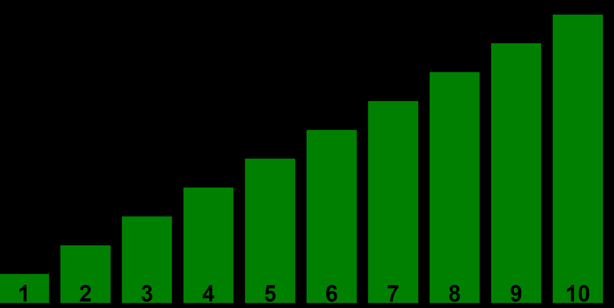

Der Selectionsort
Der Selectionsort zählt zu den einfachen natürlichen
Sortieralgorithmen,
da er sehr intuitiv ist.
Allerdings ist er bei sehr großen Datenmengen eher langsam.
Verfahren

Angenommen das obere Array soll nun sortiert werden.
Dazu sucht man zunächst das kleinste Element. In diesem Fall die 1.
Da noch kein Element vorher einsortiert wurde, setzt man die 1 an den Anfang:

Jetzt besteht der sortierte Bereich aus dem Element 1.
Suche nun wieder das kleinste Element im unsortierten Bereich (die 2)
und sortiere sie an das Ende des sortierten Bereichs (rechts von 1).

Jetzt wird die 3, dann die 4, usw... einsortiert, bis das Array vollständig sortiert ist.
